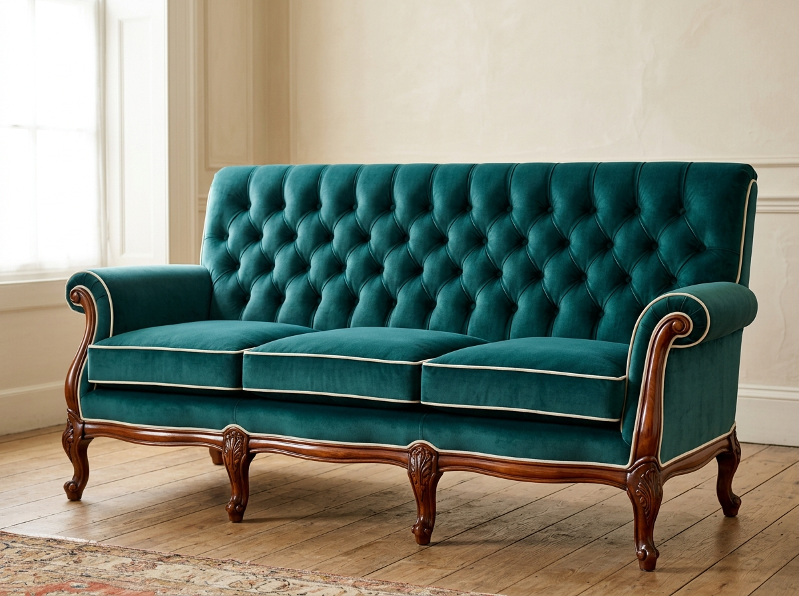
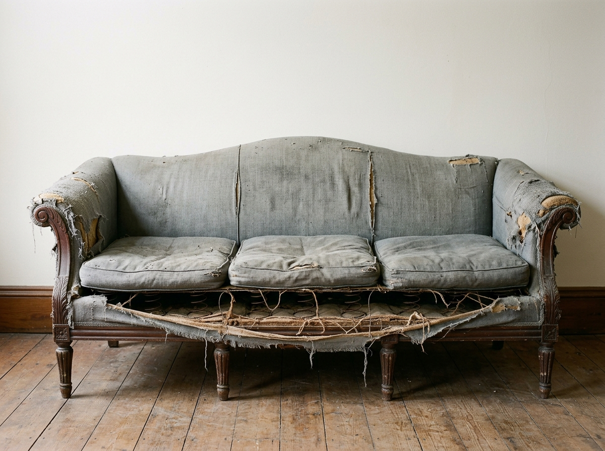
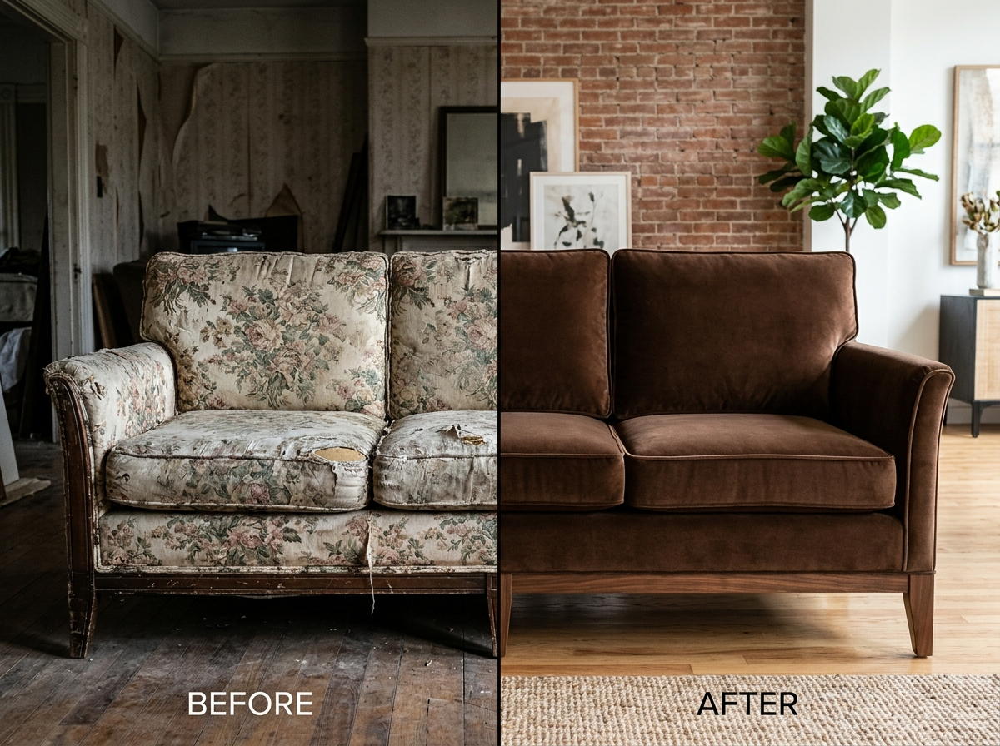
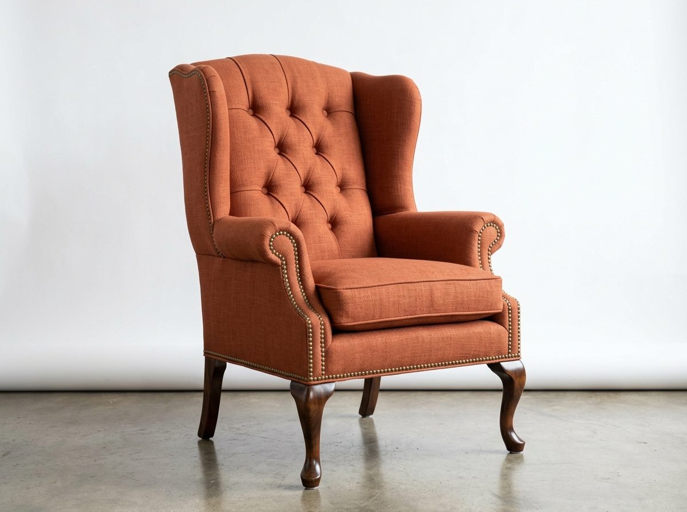
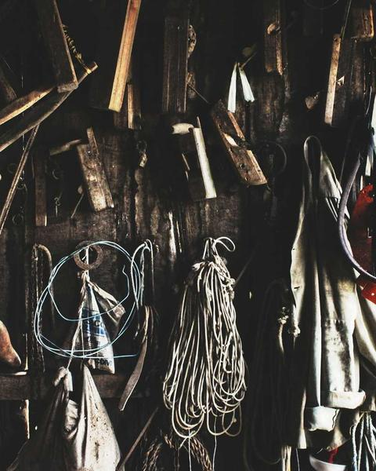

Before
After
Sofa
Mid-Century Ochre Revival
A 1960s sofa reborn in mustard ochre velvet with refinished solid walnut legs and hand-stitched edges.

Drag the slider in each image to reveal the dramatic transformation. Every piece tells a unique story of renewal and craftsmanship.


A 1960s sofa reborn in mustard ochre velvet with refinished solid walnut legs and hand-stitched edges.


Cracked faux leather stripped away, replaced with full-grain hunter green leather and polished brass nailhead detailing.


A beautiful Georgian frame fully restored, restrung, and covered in a bespoke botanical print linen with antique brass nailhead trim.


Six dining chairs transformed with matching dusty rose boucle pads — precisely aligned and finished with a single row of nailheads.


Plain laminate headboard replaced with a custom MDF frame upholstered in dramatic black velvet with vertical channel quilting.


Sagging top re-foamed to a firm profile, fully reupholstered in cognac full-grain leather with brass button centrepiece.


Complete antique restoration: new jute webbing, traditional coil springs, horsehair padding, and forest green velvet with hand-sewn piping on carved mahogany.


Delicate Edwardian nursing chair structurally restored, frame hand-polished, and upholstered in coral silk with genuine horsehair padding.
An extraordinary commission that pushed the boundaries of our craft.


A late Edwardian three-piece parlour suite — settee, gentleman's chair, and lady's chair — painstakingly restored over 6 weeks by our senior restoration team. Every coil spring was re-tied to its original tension, every carved mahogany surface polished by hand, and the peacock blue velvet applied with heirloom precision.
The result is a suite that could have walked out of a 1907 auction catalogue — yet is built to last another 100 years.
Every project starts with a story — a piece of furniture with personal meaning, and a client who trusts us to honour it.

"My grandmother's armchair sat in storage for 11 years after she passed. I could not bring myself to throw it away but it was truly beyond saving — or so I thought. ReVox restored it so perfectly that I wept when I saw it. It is the centrepiece of my living room now."

"I inherited a leather Chesterfield from my father's study. It was cracked and peeling, but the frame was solid as a rock. ReVox recognised its quality immediately and treated it accordingly. The cognac leather they chose is exactly right — aged and distinguished, like the chair itself."
From the moment your furniture enters our workshop to the day it returns home — the detailed steps that ensure perfection.
We carefully strip all existing fabric and padding, documenting every layer to understand the original construction and identify any structural issues.
Any broken joints, cracked wood, or loose frame elements are repaired using appropriate timber, traditional hide glue, and joinery techniques.
New jute or elastic webbing is installed at correct tension. Coil springs are re-tied in a figure-eight pattern to restore the original support profile.
High-density foam, Dacron, and in antique restoration, horsehair and cotton wadding are applied to achieve the correct profile and comfort level.
Fabric is cut precisely with pattern-matching considered across all surfaces. Specialist techniques — tufting, piping, channel quilting — are applied by hand.
Every seam, corner, and finishing detail is inspected by a senior artisan. Only pieces that pass our rigorous quality standard leave the workshop.
Every transformation in this gallery started with a single conversation. Contact us today for your free consultation and quote — and join the 2,500+ clients whose furniture tells a new story.